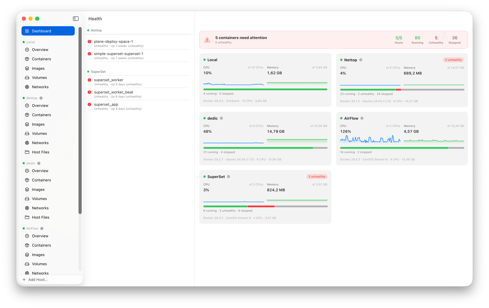
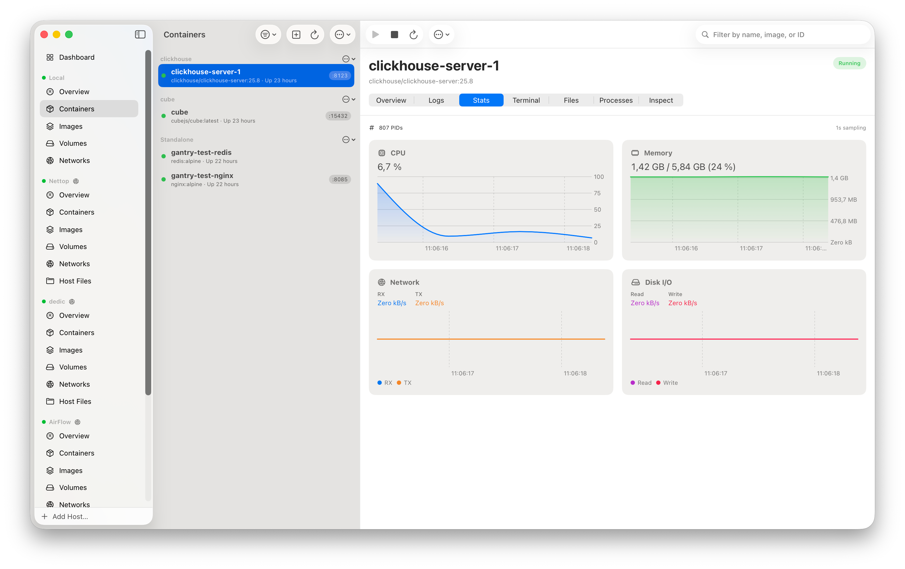
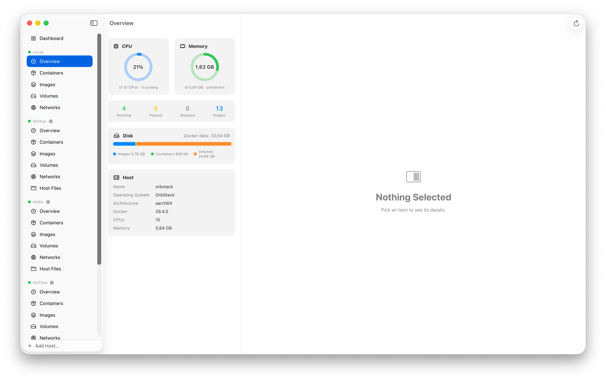

The native Docker & apple/container app
for your Mac — your whole fleet on one deck.
Gantry is a free, native macOS app to manage and monitor Docker — your local daemon and any number of remote hosts over SSH — plus apple/container, side by side. A fast, open-source Docker Desktop alternative for Mac. No Electron. No subscription. No limits.
macOS 26+ · Apple Silicon & Intel · MIT licensed · MCP server included

Works with everything you already run
Everything Docker, the Mac way
A complete, focused command center for your containers — live by default, fast to the point of feeling local even when it isn't.
One dashboard for every host
Local daemon, SSH fleet and apple/container on one screen — live CPU/memory sparklines, container-state breakdowns, and health issues that jump straight to the culprit.
Logs on steroids
Real-time follow, regex or literal ⌘F search, a level filter (Error→Trace), ANSI color, a 50k-line buffer — and merged stack logs for a whole Compose project.
web on prod-eu exited with code 1.
api on dedic failed its health check.
Know the moment it breaks
A native notification when a container crashes, runs out of memory or goes unhealthy on any host. Click it to jump straight to the container — stops you trigger yourself stay quiet.
Real-time stats
CPU, memory, network & disk I/O charted live at 1s sampling.
Built-in exec terminal
Full terminal emulation into any running container, local or remote — with color themes (System, Solarized, Dracula, Nord).
Remote hosts over SSH
Tunnels exactly like docker -H ssh:// via dial-stdio — ProxyJump bastions, multi-key auth, auto-reconnect. Nothing to install on the server, secrets in the Keychain. One-click import from ~/.ssh/config and docker context ls.
Drag & drop file browser
Browse a container's filesystem, move files in and out, and drop whole folders straight from Finder — tar-packed transparently.
Open in browser & forward
One click opens a published port. SSH ports tunnel to localhost automatically — and if it's taken, Gantry picks a free one you can edit.
Share to the internet
One click exposes a published port over a Cloudflare Tunnel. Gantry installs cloudflared for you, then gives a quick tunnel (no account, a *.trycloudflare.com URL) or a named tunnel on your own domain — perfect for a dev preview, a webhook, or letting an AI agent reach a container on your Mac.
Compose, anywhere
Containers group by their Compose project. Bring a compose file up on any host — local Docker, SSH or apple/container — with an inline YAML editor; the runner adapts per engine.
Private registries, automatically
Pulls read the docker login you already did — Gantry resolves credentials from ~/.docker/config.json, helpers and the Keychain, on create, Quick Run and Compose alike.
Build & pull images
Drop a Dockerfile on the window to build with a live log, or pull by reference with per-layer progress. Tag, prune and read layer history right in the app.
Reclaim space
One panel shows what Docker is hoarding — dangling images, stopped containers, unused volumes, build cache — with sizes, and prunes each or all, reporting what it freed.
Touch ID on destructive actions
Opt in and Gantry asks for Touch ID — or your login password — before removing a container or deleting a host. Secrets already live in the Keychain.
Terminal themes
Dress the embedded shell in System, Solarized Dark, Dracula or Nord — a full foreground, background and 16-color ANSI palette, applied live.
The desktop app for apple/container
Apple's container runtime ships as a bare CLI. Gantry is its missing GUI — what Docker Desktop is to Docker, Gantry is to apple/container. Built for container 1.0, Machines and all.
The full toolbox
Create, start, stop, kill and prune; live logs, stats, an exec terminal, top and tar export — same UI as Docker.
Machines
Long-lived Linux environments, OrbStack-style. Create, start, set a default and open a shell.
One fleet, two runtimes
apple/container hosts sit next to your Docker and SSH fleet — same dashboard, sparklines and health.
Open by IP & hostname
Every container gets a routable IP; launch on a local domain and it resolves as name.domain across your Mac.
Quick Run
Pick an image, share a folder, map ports, choose a domain — run, and the address opens in your browser.
compose, from Finder
Right-click a docker-compose.yml → Open With Gantry. It builds, networks, and starts in order — orchestration apple/container doesn't ship.
Built to be driven by AI
A bundled MCP server and App Intents expose every host — including SSH ones — to Claude, Shortcuts, Siri and scripts, with full GUI parity: create and manage containers, build and pull images, volumes and networks, Compose up, apple/container machines, even exposing a port over a Cloudflare Tunnel. Hand your fleet to an agent and let it dig in.
$ claude mcp add gantry -- \ /Applications/Gantry.app/Contents/Resources/gantry-mcp ✓ Added MCP server gantry tools: hosts · containers · images · volumes networks · logs · stats · exec · df $ claude "why is superset_worker unhealthy on dedic?"
Copy as Prompt
Hit ⌥⌘P on any container and Gantry puts a paste-ready debugging prompt on your clipboard — the host and how to reach it, the MCP host_id and tools, the container's full state, and a task matched to the symptom.
"Debug the failing health check."
"Find why it keeps crashing."
Leaves room for your own question.
Designed to feel like it shipped with the OS
Three-column split view, Liquid Glass materials, Swift Charts. Real screenshots, no mockups.


No web wrappers. No daemons of our own.
Just a fast, native Mac app talking straight to the Docker Engine API.
100% native SwiftUI
Not Electron. Launches instantly, sips memory, feels like the OS.
Swift 6
Modern, concurrency-safe codebase on the latest toolchain.
Direct Engine API
Talks over the unix socket — no shelling out to the CLI.
Auto-updates
EdDSA-signed Sparkle appcast keeps you current, out of your way.
Questions, answered
Everything you might want to know before you install Gantry.
Is Gantry free?
Yes. Gantry is completely free and open source under the MIT license. There's no subscription, no account, and no artificial limits on the number of hosts or containers.
Is Gantry a Docker Desktop or OrbStack alternative?
Gantry is a free, native macOS GUI for Docker, so it replaces the Docker Desktop dashboard and OrbStack's UI for managing containers, images, volumes, logs and stats. It's a client, not an engine — it talks to whatever daemon you run (Docker Desktop, OrbStack, Colima) or to Apple's container runtime, and adds a multi-host fleet view, SSH hosts and a built-in MCP server on top.
What do I need to run Gantry?
macOS 26 or later on Apple Silicon or Intel, plus a Docker daemon (Docker Desktop, OrbStack, Colima or similar) or Apple's container runtime.
Does Gantry work with OrbStack, Colima and Docker Desktop?
Yes. Gantry talks directly to the Docker Engine API over the Unix socket, so it works with any daemon that exposes it — including OrbStack, Colima and Docker Desktop.
Can Gantry manage remote Docker hosts?
Yes. Gantry connects to remote daemons over SSH, the same way as docker -H ssh://, with ProxyJump bastions, multi-key auth and auto-reconnect. Nothing needs to be installed on the server, and secrets live in the macOS Keychain.
Does Gantry support Apple's container runtime?
Yes. Gantry is a full GUI for apple/container 1.0 — containers, Machines, live logs, stats, an exec terminal and compose — sitting next to your Docker and SSH hosts on the same dashboard.
Does Gantry alert me when a container fails?
Yes. Gantry posts a native macOS notification the moment a container crashes, runs out of memory, or fails its health check on any host — local, SSH or apple/container. Click it to jump straight to the container. Stops and restarts you trigger from Gantry stay quiet, and you can toggle it in Settings.
Can Gantry pull from private registries?
Yes. Gantry resolves credentials from your ~/.docker/config.json — the same docker login you already ran — including inline auth, credential helpers and the macOS Keychain. Private images pull everywhere: the Pull sheet, create-and-run, Quick Run and Compose.
Can Gantry run Docker Compose?
Yes. Gantry brings a compose file up on any host — local Docker, a remote SSH host or apple/container — and adapts per engine. You can edit the YAML inline before running, containers group by project, and a Stack Logs view merges every service's output into one feed.
Is Gantry an Electron app?
No. Gantry is 100% native, built with SwiftUI and Swift 6. It launches instantly, uses little memory and feels like part of macOS.
How do I install Gantry?
Run brew install --cask getgantry/tap/gantry, or download the latest release from GitHub and drag Gantry.app into Applications.
Can AI agents control Gantry?
Yes. Gantry bundles an MCP server and exposes macOS App Intents, so Claude, Shortcuts, Siri and scripts can list hosts, inspect containers, read logs and run exec across your whole fleet — including SSH hosts.
Install in a minute
No App Store, no account. Download and drag — or one line of Homebrew.
Run the Homebrew cask, or grab the .zip from Releases and drag Gantry.app to Applications.
Not notarized yet — right-click & Open, or clear quarantine with xattr -dr com.apple.quarantine /Applications/Gantry.app
Register the bundled MCP server with claude mcp add gantry and you're done.